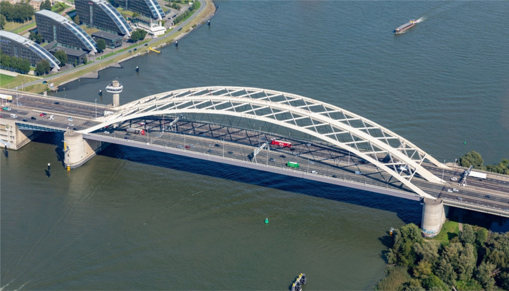
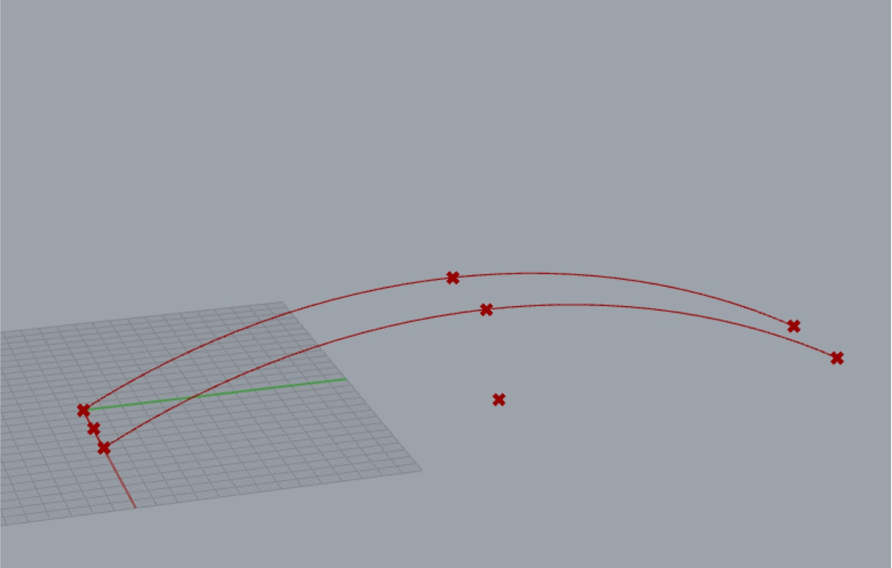

Project
Van Brienenoordbrug
Een parametrisch model van de Van Brienenoordbrug in Grasshopper: in september lukte alleen de boog, in november bouwde ik zelfstandig de hele brug.

De opgave
Bij de workshop over items, lists en trees modelleerde ik de Van Brienenoordbrug. Met hulp van anderen kwam ik toen niet verder dan de boog. Na de ThinkParametric-cursus wilde ik zien of ik de brug zelfstandig kon maken.
Het proces
Bij de eerste poging (21 september 2026) maakte ik met hulp de curves van de boog. Na de cursus begon ik opnieuw en bouwde ik zonder hulp de bogen met vakwerk ertussen, het brugdek, de pijlers en de aanbruggen (23 november 2026).
Werk in detail
Referentie

Eerste poging met hulp van anderen
21 september 2026

Tweede poging zonder hulp (na de cursus)
23 november 2026
Het resultaat
Het verschil tussen de twee pogingen laat zien hoeveel ik in twee maanden heb geleerd: van een paar curves met hulp naar een complete brug die ik zelf heb opgebouwd.